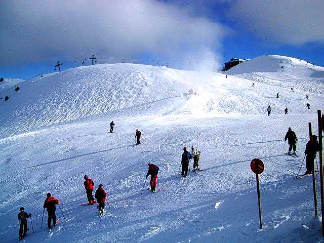

واحدًا من أبرز المنتجعات وأكثرها شعبية بين الإيرانيين والسُياح على حد السواء، يقع منتجع توجال للتزلج Tochal Ski Resort بالقرب من العاصمة طهران ولعل هذا يُعد من أهم أسباب تلك الشعبية التي يحظى بها، يقع هذا المُنتجع في منطقة تُسمى شميرانات على بعد 5 كم عن ساحة تجريش بشمال شرق طهران

يتميز المُنتجع بأنه ينقسم إلى 3 مُنتجعات فرعية وهما منتجع القمة و منتجع السفح الغربي و منتجع المحطة السابعة، حيث تبلغ القمم الثلجية في هذه المنتجعات الثلاثة ارتفاعات شاهقة تتخطى في بعض الأحيان حاجز الثلاثة آلاف متر أو يزيد، وجميعها يكسوها بياض الجليد في مشاهد بديعة
يلاقي هذا المُنتجع رواجًا شهيرًا خلال فصل الشتاء، حيث يكتظ بالسائحين القادمين من لـ السياحة في ايران من مُختلف أنحاء العالم كي يستمتعون بمُمارسة مُختلف الرياضات المُرتبطة بالجليد مثل التزحلق والسباقات الجليدية التي تتم في مناطق مُمهدة وآمنة تمامًا، كما يوفر المُنتزه أيضًا عدد من الأنشطة الشعبية الأخرى للزوار مثل رياضة التنس، والرماية بالإضافة إلى الخدمات التي ترتبط بالجليد بشكل عام من استئجار مُدربين وملابس خاصة بالتزحلق

أنشطة تقوم بها في منتج توجال للتزلج
مُحبي رياضة التزلج على الجليد سوف يجدون ضالتهم داخل هذا المُنتجع الذي يعد قلب هذه الرياضة في العالم، أيضا الارتفاع الشاهق في القمم الجبلية الموجودة بهذا المُنتجع توفر وجود الجليد لأكثر من ثمانية أشهر في السنة مما يجعله المكان المثالي حقًا لهذه الرياضة
لمحبي السفر والترحال والتخييم على الجبال والمرتفعات يمكنكم استئجار كوخ صغير خشبي والتمتع بالأجواء ليلا ومشاهدة غروب الشمس وشروق الشمس الأخاذ حيث يتلألأ الثلج كقطع الكريستال اللامعة مشهد لاينسى
الأكثر دهشة ومتعة في المنتجع هو ركوب التلفريك والقيام بجولة مُمتعة داخل مُنتجع توجال بين الجبال البيضاء، مُحبي المرتفعات سوف يجدون هذا التلفريك مكانًا مُمتعًا بحق ويستحق أكثر من جولة واحدة
يمكنكم تجربة قاعة سينما خماسية الأبعاد حيث يمكنكم التمتع برحلة شيقة ممتعة على القطار أو السفينة فقد تأسست في 2011 وبدأت أعداد الزوار تزداد من السكان المحليين والسياح إلى المكان بشكل كبير
يمكنكم تناول المشروبات الساخنة والشكولاه والوجبات اللذيذة في الأعلى حيث يوجد في كل محطة مقهى يقدم خدماته للزوار
في مكان رائع كهذا لن تتوقفوا عن التقاط الصور الفوتوغرافية الجميلة لكم ولأحبتكم وأنتم تتزلجون وتبنون رجل الثلج في المنتجع وتتراشقون كرات الثلج ستحبون رؤية طهران من الاعلى فأنت في أهم المعالم السياحية في ايران طهران
: ساعات العمل
الإثنين وحتى الجمعة من 8 صباحًا وحتى 2.30 بعد منتصف الليل.
الأحد مُغلق